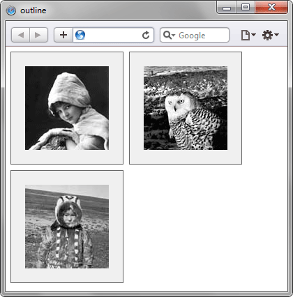

outline
Универсальное свойство, одновременно устанавливающее цвет, стиль и толщину внешней границы на всех четырёх сторонах элемента. В отличие от линии, задаваемой через border, свойство outline не влияет на положение блока и его ширину. Также нельзя задать параметры линии на отдельных сторонах элемента, outline применяется сразу ко всем четырём сторонам.
Краткая информация
| Значение по умолчанию | Нет |
|---|---|
| Наследуется | Нет |
| Применяется | Ко всем элементам |
Синтаксис
outline: outline-color || outline-style || outline-widthЗначения
- outline-color
- Задаёт цвет линии в любом допустимом для CSS формате.
- outline-style
- Стиль линии.
- outline-width
- Толщина границы.
Пример
<!DOCTYPE html>
<html>
<head>
<meta charset="utf-8">
<title>outline</title>
<style>
.photo img {
padding: 20px; /* Поля вокруг изображения */
margin-right: 10px; /* Отступ справа */
margin-bottom: 10px; /* Отступ снизу */
outline: 1px solid #666; /* Параметры рамки */
background: #f0f0f0; /* Цвет фона */
float: left; /* Обтекание по правому краю */
}
</style>
</head>
<body>
<div class="photo">
<img src="images/girl.jpg" alt="Девочка с муфтой">
<img src="images/owl.jpg" alt="Сова">
<img src="images/boy.jpg" alt="Эвенкийский мальчик">
</div>
</body>
</html>Результат данного примера показан на рис. 1.

Рис. 1. Использование свойства outline
Объектная модель
Спецификация
| Спецификация | Статус |
|---|---|
| CSS Basic User Interface Module Level 3 | Рабочий проект |
| CSS Level 2 (Revision 1) | Рекомендация |
Браузеры
| Internet Explorer | Chrome | Opera | Safari | Firefox |
| 8 | 1 | 7 | 1.2 | 1.5 |
| Android | Firefox Mobile | Opera Mobile | Safari Mobile |
| 1 | 1 | 6 | 3.1 |